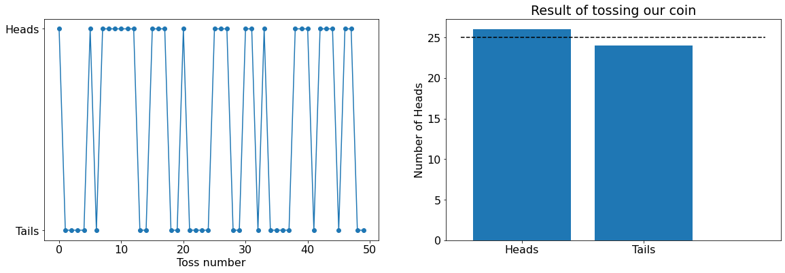
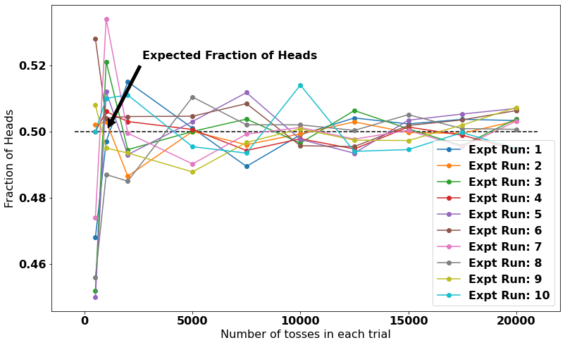
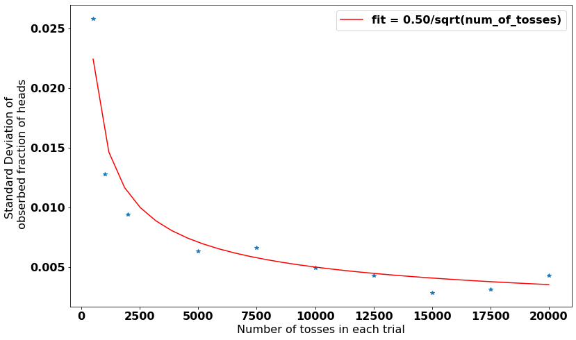

Understanding Probability and Randomness using a coin
Posted on Sat 18 April 2020 in Python, Statistics
I was refreshing my understanding of probability and random chance. I think that a simple experiment of tossing a coin and observing the result is very useful in understanding these concepts.
As we know a coin when tossed/flipped will result either in a HEAD or TAIL. So a simple quesion to answer is "If I toss a fair coin (equal chance of Head and Tail) 1000 times, how many times do you expect to get HEADS?"
Is it 500 or in other words the fraction of heads is 0.5?
Actually the answer is complicated. It may be 500, but it could be also above 500 or below 500. There is going to be uncertainity/randomness in the number of heads or the fraction of heads.
To investigate more about the nature of this randomness, lets define some terms to make it easy to follow this write-up.
We can define
-
a trial as series of tosses. Each trial is characterized by certain number of tosses and associated fraction of heads that result from this trial.
-
an expt run is a series of one or more trials.
Understand these definitions before we can move ahead.
Questions to ask:
-
Will the fraction of heads in a trial change between expt runs?
We will see that for each trial in different expt run, we will get different fraction sometimes above 0.5, sometimes exactly 0.5 and sometimes below 0.5.
-
Does this behavior chance if there are more tosses in a trial?
No. But, we will see that as the number of tosses in a trial increases (lets say the number of tosses change from 500 to 20000), the fraction of heads approaches towards 0.5 or in other words the uncertainity in the fraction of heads decreases.
To understand these insights, lets start make a python class that mimics the behavior of fair coin and play with it.
import random
class Coin():
def __init__(self, heads_prob=1/2):
self.heads_prob = heads_prob
@property
def toss(self):
# 1 represents head and 0 represents tail
return random.randint(0,1)
# Lets mint our coin
mycoin = Coin()
Lets run an expt with one trial. In this trial, we will toss the coin 100 times. Lets check if our newly minted coin is tossing as we expect
num_tosses = 50
# lets run a trial ie toss it for 50 times!
toss_coin_results = [mycoin.toss for toss in range(num_tosses)]
fig, ax = plt.subplots(ncols = 2, figsize = (2*6*1.619, 6))
# lets plot how we do in each toss
ax[0].plot(toss_coin_results,'-o')
# lets plot the number of heads and number of tails in this trial
ax[1].bar(x = ['Heads', 'Tails'], height = [sum(toss_coin_results), num_tosses - sum(toss_coin_results)])
ax[1].hlines(y = num_tosses/2, xmin=-0.5, xmax=2, linestyle = '--')
# Apply some cosmetics
ax[0].set_xlabel('Toss number'); ax[0].set_yticks([0,1]);ax[0].set_yticklabels(['Tails','Heads']);
ax[1].set_ylabel('Number of Heads')
plt.title('Result of tossing our coin');
# toss the coin for 100 times
toss_coin_results = [mycoin.toss for toss in range(100)]
# Plot the result as function of toss number
plt.plot(toss_coin_results,'-o')
plt.xlabel('Toss number'); plt.yticks([0,1], labels = ['Tails','Heads']);
plt.title('Result of tossing our coin');

As expected it is generating 'Heads' and 'Tails' randomly with the number of tosses. But you can see that the number of 'Heads' is not exactly the half of the tosses. If we repeated this expt of one trial, we will get different numbers. So there will uncertainity in the fraction of heads.
To understand that uncertainity, lets conduct a series of expt runs. For each run, we will conduct different trials consisting of different number of tosses and calculate the fraction of heads in each trial.
We will look at the effect of number of tosses in a trial and see if it varies with number of tosses or the expt run. So the outline of our expt is as follows
Expt Run1:
Trial 1 (Toss for 50 times). Calculate the fraction of heads. Trial 2 (Toss for 100 times). Calculate the fraction of heads. ... Trial x (Toss for 20000 times). Calculate the fraction of heads.
Expt Run2
Repeat of Run1
Expt Run3 Repeat of Run 1 ...
Expt Run 10
## Lets define the expt with a series of trials
def expt_run():
num_of_tosses_in_each_trial = [500, 1000, 2000, 5000, 7500,
10000, 12500, 15000, 17500, 20000]
fraction_of_heads_in_each_trial = []
for num_in_trial in num_of_tosses_in_each_trial:
tosses = [mycoin.toss for toss in range(num_in_trial)]
fraction_of_heads_in_each_trial.append(sum(tosses)/num_in_trial)
return num_of_tosses_in_each_trial, fraction_of_heads_in_each_trial
## Set up the canvas to plot
fig, ax = plt.subplots(figsize=( 8*1.619, 8))
## Run the expt for ten times
expt_runs = 10
fraction_of_heads_in_each_trial_all_runs = []
for expt in range(expt_runs):
num_of_tosses_in_each_trial, fraction_of_heads_in_each_trial= expt_run()
fraction_of_heads_in_each_trial_all_runs.append(fraction_of_heads_in_each_trial)
# plot the results of each run
ax.plot(num_of_tosses_in_each_trial, fraction_of_heads_in_each_trial,'-o',
label = f'Expt Run: {expt+1}')
xmin, xmax = ax.get_xlim()
ax.hlines(mycoin.heads_prob, xmin, xmax, linestyles = '--')
ax.legend()
ax.set_xlabel('Number of tosses in each trial')
ax.set_ylabel('Fraction of Heads')
ax.annotate('Expected Fraction of Heads',
xy=(1000, 0.5), xycoords='data',
xytext=(300, 100), textcoords='offset points',
arrowprops=dict(facecolor='black', shrink=0.05),
horizontalalignment='right', verticalalignment='bottom')
This results in 
What do you see from this figure?
1) Lets look at fraction of heads at a certain trial, it is sometimes above 0.5 and sometimes below 0.5 depending on the expt run.
2) The variation (difference between the expected fraction of heads, ie 0.5 and observed fraction of heads in different runs) is getting lesser with more number of tosses in a trial. It is approaching 0.5 but is never 0.5.
In other words, if we define the uncertainity as the standard deviation (paremeter estimating the variation) among various expt runs (at the same number of tosses). We can say that the uncertainity is decreasing with the number of tosses.
Is there a precise relationship of this uncertainity? Yes there is.
Lets plot that and see if we can fit it with a mathematical function
from scipy.optimize import curve_fit
# lets convert the revalant list objects to numpy arrays for convinience
fraction_of_heads_in_each_trial_all_runs = np.array(fraction_of_heads_in_each_trial_all_runs)
num_of_tosses_in_each_trial = np.array(num_of_tosses_in_each_trial)
# This is the standard deviation of fraction of heads at different trials
std_observed_fraction_of_heads = fraction_of_heads_in_each_trial_all_runs.std(axis = 0)
# Plot the standard deviation with the number of tosses in each trial
plt.figure(figsize=(8*1.616, 8))
plt.plot(num_of_tosses_in_each_trial, std_observed_fraction_of_heads,'*')
## lets define a function that is approrpriate for the relationship.
def func(x,a):
return a/(np.sqrt(x))
## Fit the curve and plot along side our datapoints
popt, pcov = curve_fit(func,num_of_tosses_in_each_trial, std_observed_fraction_of_heads)
fit_for_these_x = np.linspace(min(num_of_tosses_in_each_trial), max(num_of_tosses_in_each_trial), 30)
plt.plot(fit_for_these_x, func(fit_for_these_x , *popt) , 'r-', label = f'fit = {popt[0]:.2f}/sqrt(num_of_tosses)')
plt.xlabel('Number of tosses in each trial')
plt.ylabel('Standard Deviation of \n obserbed fraction of heads')
plt.legend()
plt.show()

We try to fit the relationship between the uncertainity in fraction of heads and the number of tosses with a functional form a/sqrt(n), where n is the number of tosses and a is constant. The fits looks pretty good, so we can concude that it is following inverse of square root of n relationship. This is an important conclusion and can be also proved mathematically. It forms the basis of many stastical tests and parameters like standard errors and confidence intervals.
So what does it means to say a coin has a probability of 0.5? If we have very large number of tosses in a trial, then we could expect the fraction of heads to be very close to a value of 0.5.
Another interesting thing that we notice is... why did the curve fitting came up with a=0.5? Thats for another day.